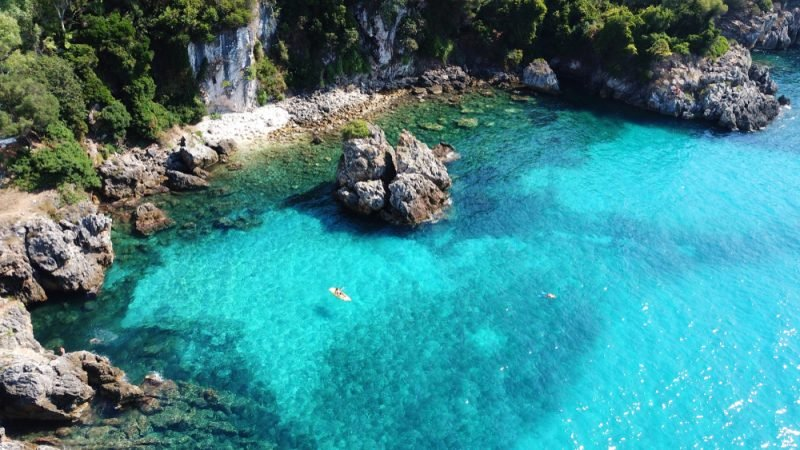

Visiter Ibiza, la plus célèbre des îles des Baléares.
Ibiza, aussi surnommée l’île des Pins, est l’une des plus grandes îles de l’archipel des Baléares, en Espagne.
Ses principales villes sont Eivissa, Santa Eulària des Riu et Sant Antoni de Portmany.
Venez visiter Ibiza et soyez subjugués par la beauté de ses paysages. La mer méditerranée, d’un bleu limpide, borde la belle île comme pour la préserver.
Profitez de son climat sec, doux et très ensoleillé pour vous divertir et vous relaxer. Venez passer des vacances inoubliables dans ce lieu mondialement connu pour son côté festif mais aussi son charme incroyable.

Une session de kayak
Randonnée et Location Kayak à Sant Antoni de Portmany, Ibiza.
Si vous rêvez de découvrir le littoral autrement, la location de kayak est faite pour vous ! Venez visiter Ibiza sous un autre jour en passant côté mer.
Profitez de ses eaux cristallines, explorez des sites protégés des touristes où vous pourrez trouver un peu plus de quiétude. Accessible à tous, le kayak est une activité que l’on peut pratiquer seul ou en famille.
Installez-vous et partez explorer des cavernes ou des superbes criques. Vous pouvez également partir à la découverte de Formentera, l’île voisine d’Ibiza.
Les grottes San Marca
Que faire à Ibiza lorsque l’on a besoin d’un endroit plus calme, à l’abri des regards ?
Voici une activité inoubliable : la visite des grottes de San Marca dit Cova de Can Marça.
Ancien refuge pour les malfaiteurs, ce n’est qu’en 1980 que ces grottes ont ouvert leurs portes au tourisme.
En visitant ce site vous aurez le privilège de découvrir stalactites et stalagmites sur une superficie totale de 8500 m2.
Mais pas seulement ! Puisque ce lieu magique vous offre également un vrai spectacle de son et lumière ainsi que des jeux d’eau.
La Marina d’Ibiza
La Marina d’Ibiza, ou le vieux port, est LE lieu incontournable à voir lorsque vous souhaitez visiter Ibiza.
Balade sur les quais, architecture originale et colorée signée Jean Nouvel, pour ses buildings appelés les « Boas » .C’est ici que vous retrouverez le club Pacha.
Fan de yachts en tous genres ? Vous allez être conquis ! En journée ou en soirée, vous trouverez toujours que faire à Ibiza. Des restaurants et bars longent les quais.
Entrez dans les ruelles, faites les magasins.La Marina d’Ibiza est le noyau de l’île !
Ushuaia Beach Club
Dans bon nombre d’esprits, Ibiza est synonyme de fête.
Et ce n’est pas pour rien ! L’île incarne le paradis pour les inconditionnels fêtards. Que faire à Ibiza pour se divertir ? Rien de plus simple, la liste des clubs est très longue !
Mais parmi les plus réputés vous pourrez choisir entre le célèbre Pacha, un club mythique et emblématique de l’île.
Il est suivi de près par l’Amnesia, un club qui a tout de même le luxe d’avoir été élu plusieurs fois meilleur club du monde. Et pour finir retrouvez aussi le Ushuaia Ibiza, Un superbe club en plein air. Là-bas, piscine et cocotiers vous accompagnent pour vous faire danser dès 17h et jusqu’à minuit. Pas mal comme compromis !